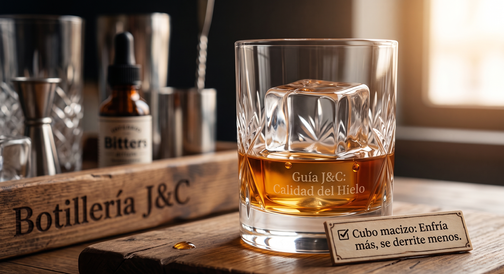

El ingrediente olvidado: por qué la calidad del hielo define el sabor de tu trago
Solemos gastar tiempo y dinero eligiendo una buena botella de destilado, pero muchas veces arruinamos la experiencia usando hielo hueco, con olor a refrigerador o demasiado picado. En coctelería, el hielo es un ingrediente activo fundamental.
El hielo pequeño o con bolsas de aire se derrite a gran velocidad, aguando el trago en pocos minutos y matando los matices de destilados como el whisky o el gin. Por el contrario, un cubo macizo, grande y denso enfría el vaso rápidamente sin desprender agua en exceso, permitiendo disfrutar los aromas originales de principio a fin.
